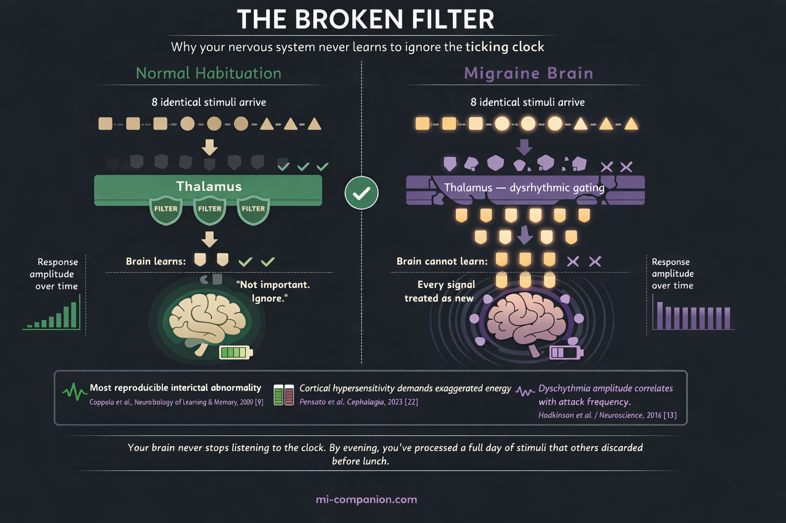
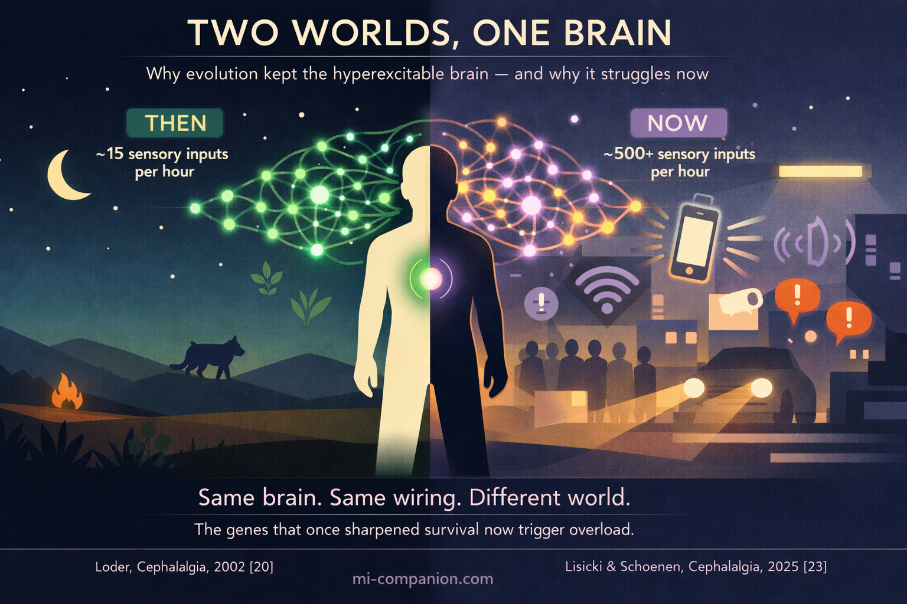

By Rustam Iuldashov
30 years lived experience with chronic migraine | Sources: 27 peer-reviewed references including Nature Genetics (n=873,341), Journal of Neuroscience (n=40), The Journal of Headache and Pain (n=113) | Last updated: June 1, 2026
Medical Review: This content is based on peer-reviewed research from Nature Genetics, Brain, Cephalalgia, Journal of Neuroscience, Neurology, International Journal of Molecular Sciences, The Journal of Headache and Pain, Nature Reviews Neurology, Frontiers in Neurology, and The Lancet Neurology.
Important Notice: This article is for informational purposes only and does not replace professional medical advice. The author is not a licensed physician or healthcare professional. Always consult your doctor before making changes to your treatment plan.
Key Takeaways
- The migraine brain is cortically hyperexcitable — neurons fire more easily and intensely in response to stimulation, even between attacks[1, 2, 3]
- An imbalance between excitatory glutamate and inhibitory GABA tilts the system toward overactivation, creating vulnerability to cortical spreading depression[4, 5, 6]
- Habituation deficit — the brain’s failure to tune out repetitive stimuli — is the most consistent neurophysiological finding in migraine research[9, 10, 11]
- Thalamocortical dysrhythmia disrupts the brain’s sensory filter, flooding an already sensitized cortex with information[13, 14]
- Migraine susceptibility is deeply genetic: 123 risk loci have been identified in a landmark GWAS, with heritability estimated at 40–60%[16]
- Evolutionary evidence suggests the hyperexcitable brain once enhanced survival — sharpening threat detection, sensory vigilance, and environmental awareness in a world with far fewer stimuli[20, 21, 22]
The espresso machine hisses. Fluorescent lights hum. Someone’s perfume drifts from the next table. For most people, this is a café. For you, it’s an assault.
Your nervous system catalogues every flicker, every scent, every frequency. While other brains dismiss these as background noise, yours flags each one as potentially important. And sometimes — often without warning — that relentless vigilance tips into a migraine.
This isn’t weakness. It’s neuroscience. The migraine brain is wired to process the world at a higher gain than everyone else’s. After 30 years of living with this brain, I can tell you: understanding the wiring changes how you live with it.
The Volume Knob That Won’t Turn Down
Every brain has a property called cortical excitability — how easily its neurons fire in response to stimulation. In people with migraine, that excitability is dialed up. Not subtly. Measurably.
Functional MRI reveals that the migraine brain — even between attacks — displays heightened activity in the visual cortex and other sensory regions.[1] Transcranial magnetic stimulation studies tell the same story from a different angle: when researchers use magnetic pulses to generate tiny flashes of light (called phosphenes), migraineurs perceive them at far lower thresholds than controls.[2] Their visual cortex fires more easily. Magnetoencephalography studies confirm the pattern extends beyond vision — the somatosensory cortex, the brain region that processes touch, is also hyperexcitable in migraineurs, and the degree of hyperexcitability tracks with attack frequency.[3]
Imagine a home security system. Most people’s ignores the cat in the yard. Yours dispatches the police.
The Chemistry Behind the Chaos
Two neurotransmitters sit at the heart of this story: glutamate and GABA.
Glutamate is the brain’s accelerator — it tells neurons to fire. GABA is the brake — it tells them to stop. In migraine, the accelerator is stuck and the brake is soft. Magnetic resonance spectroscopy has detected elevated glutamate levels in the visual cortex and other brain regions of migraineurs, pointing to a system tilted toward excitation.[4][5] Meanwhile, GABA function appears reduced in sensory pathways, weakening the brain’s ability to quiet itself down.[6]
The consequences are tangible. In familial hemiplegic migraine — a rare, single-gene subtype — excessive glutamate and potassium directly trigger cortical spreading depression: a slow wave of electrical silence that rolls across the brain’s surface and underlies migraine aura.[7] In common migraine, the imbalance is subtler. But the direction is identical. Too much gas. Not enough brake.
What makes this especially treacherous is that the imbalance isn’t static. A 2023 review in the International Journal of Molecular Sciences described it as a dynamic process that shifts throughout the migraine cycle — the brain constantly reaching for homeostatic balance and never quite arriving.[8]
Your vulnerability isn’t constant. It oscillates. And that’s what makes triggers so unpredictable.
Your Brain’s Broken Filter
Now here’s where things get personal. One of the most consistent, most reproducible abnormalities found in the migraine brain is a deficit in habituation.[9]
Habituation is simple. Walk into a room with a ticking clock and you notice it. Stay ten minutes and you don’t. Your brain decided the ticking wasn’t a threat and stopped spending resources on it. That’s habituation — the ability to tune out what doesn’t matter.
Migraine brains can’t do this properly.
Visual evoked potential studies have shown it again and again: healthy brains reduce their electrical response to repeated visual stimuli over time. Migraine brains maintain it. Some even increase it.[10][11] A 2023 study from Barcelona’s Vall d’Hebron Research Institute confirmed this pattern holds in both young and middle-aged migraineurs, and correlates with disease severity.[12]
In daily life, this means your nervous system never stops listening to the clock. Every stimulus — no matter how trivial, no matter how repetitive — demands full processing. By evening, you’ve spent a day’s worth of cognitive energy on stimuli that other people’s brains discarded before lunch.
This is why so many migraine days end in the dark. Silence isn’t preference. It’s survival.

The Gatekeeper That Lets Everything Through
Deep in the brain sits the thalamus — a walnut-sized structure that serves as the central relay station for nearly all sensory information. Before a sight reaches your visual cortex or a sound reaches your auditory cortex, it passes through the thalamus. In a healthy brain, the thalamus filters. It decides what’s worth forwarding upstairs and what’s noise.
In the migraine brain, the filter leaks.
Imaging studies have revealed abnormal low-frequency oscillations in the thalamocortical networks of migraineurs, concentrated in the medial dorsal and pulvinar nuclei.[13] These oscillations represent thalamocortical dysrhythmia — a mismatch in the rhythmic conversation between thalamus and cortex. And the degree of dysrhythmia correlates directly with attack frequency.[13]
A 2019 study published in Neurology mapped this disruption in real time. Using dynamic functional connectivity analysis, researchers found that migraine patients spent significantly more time in a strongly interconnected brain state with abnormal thalamus-to-visual-cortex wiring, and less time in a resting, disconnected state.[14][15] The stronger the posterior thalamus connectivity with the visual cortex, the more frequent the headaches.
The picture is now complete: the gate is open and the alarm behind it is hair-trigger sensitive. A double vulnerability — too much sensory information flooding a cortex already primed to overreact.
⚠️ When to Seek Emergency Help
Migraine is a chronic neurological condition, not a medical emergency — in most cases. However, a sudden, explosive headache unlike anything you’ve experienced before (often described as “the worst headache of my life”), a headache accompanied by fever, stiff neck, confusion, seizures, double vision, weakness, numbness, or difficulty speaking requires immediate evaluation. These symptoms can mimic migraine but may indicate a stroke, meningitis, or cerebral hemorrhage.
If you experience any of these symptoms, call your local emergency number immediately. Do not use this article to self-diagnose. When in doubt, seek emergency care.
Written in Your DNA
None of this is accidental. It’s inherited.
In 2022, the International Headache Genetics Consortium published the largest genome-wide association study of migraine ever conducted: 102,084 cases against 771,257 controls. They identified 123 genetic risk loci — 86 discovered for the first time.[16]
Many of these genes govern ion channel function, neurotransmitter regulation, and vascular tone — the precise machinery that controls cortical excitability.[17] The heritability of common migraine runs between 40 and 60 percent. Among the identified loci are genes encoding the targets of today’s most effective migraine medications: CALCA/CALCB, which produces CGRP (blocked by drugs like erenumab), and HTR1F, the serotonin receptor targeted by ditans like lasmiditan.[16]
In rare monogenic forms like familial hemiplegic migraine, single mutations in ion transporter genes — CACNA1A, ATP1A2, SCN1A — directly rewire neuronal excitability.[18] In common migraine, no single gene is responsible. Instead, hundreds of small genetic variations collectively nudge the excitability threshold lower, making the brain more responsive to stimuli that other nervous systems simply ignore.
You didn’t create your migraine brain. It was built before you were born.
Not a Flaw — A Feature?
If migraine genes are so harmful, evolution should have eliminated them. It hasn’t. Migraine affects roughly 14% of the global population — well over a billion people.[19] A trait that prevalent, that persistent across millennia, demands an explanation.
In 2002, Elizabeth Loder posed the question directly in Cephalalgia. Her answer: the migraine-prone nervous system likely conferred survival advantages. Migraineurs demonstrate enhanced visual processing, lower olfactory detection thresholds, and sharper attention to environmental stimuli. In ancestral environments, these traits could have meant the difference between detecting a predator in time and not.[20]
A 2023 evolutionary game theory model went further. All identified migraine-related genes increase sensory sensitivity, the study argued. In a hypersensitive state, the brain recognizes threats more easily — a benefit not just for the individual but for the group.[21] A companion paper in Cephalalgia that same year described migraine attacks as an evolutionarily conserved homeostatic response: a brain demanding rest when energy reserves are depleted, much like hunger or thirst.[22]
Then came the modern twist. In 2025, Lisicki and Schoenen published the counterargument: the same heightened perception that once aided survival now makes migraineurs vulnerable to constant sensory overload — artificial lighting, urban noise, glowing screens.[23] The wiring is ancient. The environment is not.
Your hyperexcitable brain isn’t a defect. It’s a sentinel system designed for a quieter world — one that no longer exists.

What This Means for You
Understanding the neuroscience changes the strategy. You’re not fighting a broken brain. You’re managing one that runs hot. That shift matters.
Protect the threshold.
Every stacked trigger — poor sleep, skipped meals, stress, bright lights — pushes excitability closer to the tipping point where cortical spreading depression ignites. Consistency in sleep, meals, and sensory exposure isn’t a lifestyle recommendation. It’s the frontline intervention.[24]
Help your filter.
Your thalamus is overwhelmed. Sunglasses outdoors, noise-reducing earbuds in crowded spaces, dimmed screens, reduced sensory multitasking — these aren’t accommodations. They’re strategic load reduction for a gatekeeper that’s already running beyond capacity.
Use your wiring.
If your brain is built for deep sensory processing, that capacity doesn’t vanish between attacks. Many migraineurs report heightened empathy, aesthetic sensitivity, and exceptional attention to detail. Outside of an attack, these aren’t symptoms. They’re strengths.
Track your cycle.
Because the excitation-inhibition balance shifts throughout the migraine cycle,[8] knowing where you are in that cycle — through daily tracking — lets you anticipate vulnerable windows before your body announces them with pain.
Your brain processes the world more deeply than most. That’s the price. It’s also the gift.
⚕️ Important Medical Disclaimer
This article is for informational and educational purposes only and does not constitute medical advice, diagnosis, or treatment. The author, Rustam Iuldashov, is not a licensed physician, neurologist, or healthcare professional. He is a patient advocate with 30 years of personal experience living with chronic migraine.
All clinical claims in this article are sourced from peer-reviewed research published in indexed medical journals. Study designs and sample sizes are noted where applicable.
Always consult a qualified healthcare provider for questions about your individual health, migraine treatment, or medication decisions.
Do not adjust or discontinue any prescribed migraine medication — including CGRP inhibitors, triptans, ditans, or preventive therapies — based on information in this article without first discussing it with your neurologist or prescribing physician. This content was last reviewed for accuracy on June 1, 2026.
References
- de Tommaso M, Ambrosini A, Brighina F, Coppola G, Perrotta A, Pierelli F, et al. “Altered processing of sensory stimuli in patients with migraine.” Nature Reviews Neurology, 10:144–155 (2014). doi:10.1038/nrneurol.2014.14. Study design: Systematic review. n=multiple studies reviewed.
- Aurora SK, Wilkinson F. “The Brain is Hyperexcitable in Migraine.” Cephalalgia, 27(12):1442–1453 (2007). doi:10.1111/j.1468-2982.2007.01502.x. Study design: Review of neurophysiological studies.
- Lang E, Kaltenhäuser M, Neundörfer B, Seidler S. “Hyperexcitability of the primary somatosensory cortex in migraine—a magnetoencephalographic study.” Brain, 127(11):2459–2469 (2004). doi:10.1093/brain/awh295. Study design: Case-control MEG study. n=42.
- Prescot A, Becerra L, Pendse G, et al. “Excitatory neurotransmitters in brain regions in interictal migraine patients.” Molecular Pain, 5:34 (2009). doi:10.1186/1744-8069-5-34. Study design: Cross-sectional MRS study. n=32.
- Zielman R, Wijnen JG, Webb A, et al. “Cortical glutamate in migraine.” Brain, 140(7):1894–1901 (2017). doi:10.1093/brain/awx130. Study design: Cross-sectional 7T MRS study. n=40.
- O’Hare L, Asher JM, Hibbard PB. “Excitation-Inhibition Imbalance in Migraine: From Neurotransmitters to Brain Oscillations.” International Journal of Molecular Sciences, 24(12):10093 (2023). doi:10.3390/ijms241210093. Study design: Comprehensive review.
- Bhatt DK, et al. “Cortical excitability in migraine: Contributions of magnetic resonance imaging.” Revue Neurologique, 177(7):812–820 (2021). doi:10.1016/j.neurol.2021.07.015. Study design: Review.
- O’Hare L, Asher JM, Hibbard PB. “Excitation-Inhibition Imbalance in Migraine: From Neurotransmitters to Brain Oscillations.” International Journal of Molecular Sciences, 24(12):10093 (2023). doi:10.3390/ijms241210093. Study design: Perspective review.
- Coppola G, Pierelli F, Schoenen J. “Habituation and migraine.” Neurobiology of Learning and Memory, 92(2):249–259 (2009). doi:10.1016/j.nlm.2008.07.006. Study design: Review.
- Abbas Abdulhussein M, Alyasseri ZAA, Mohammed HJ, An X. “Lack of Habituation in Migraine Patients Based on High-Density EEG Analysis Using the Steady State of Visual Evoked Potential.” Entropy, 24(11):1688 (2022). doi:10.3390/e24111688. Study design: Case-control EEG study. n=41.
- Sezai T, Murphy MJ, Riddell N, Nguyen V, Crewther SG. “Visual Processing During the Interictal Period Between Migraines: A Meta-Analysis.” Journal of Clinical Medicine, 13(1):133 (2024). doi:10.3390/jcm13010133. Study design: Meta-analysis.
- Marti-Marca A, Vilà-Balló A, Cerda-Company X, et al. “Exploring sensory sensitivity, cortical excitability, and habituation in episodic migraine.” The Journal of Headache and Pain, 24(1):104 (2023). doi:10.1186/s10194-023-01618-w. Study design: Cross-sectional case-control. n=113.
- Hodkinson DJ, Wilcox SL, Veggeberg R, et al. “Increased Amplitude of Thalamocortical Low-Frequency Oscillations in Patients with Migraine.” Journal of Neuroscience, 36(30):8026–8036 (2016). doi:10.1523/JNEUROSCI.1038-16.2016. Study design: Resting-state fMRI. n=40.
- Tu Y, Fu Z, Zeng F, et al. “Abnormal thalamocortical network dynamics in migraine.” Neurology, 92(23):e2706–e2716 (2019). doi:10.1212/WNL.0000000000007607. Study design: Resting-state fMRI with dynamic FC. n=56.
- Tu Y, Fu Z, Zeng F, et al. “Abnormal thalamocortical network dynamics in migraine.” Neurology, 92(23):e2706–e2716 (2019). doi:10.1212/WNL.0000000000007607. Study design: Resting-state fMRI with dynamic FC. n=56.
- Hautakangas H, Winsvold BS, Ruotsalainen SE, et al. “Genome-wide analysis of 102,084 migraine cases identifies 123 risk loci and subtype-specific risk alleles.” Nature Genetics, 54(2):152–160 (2022). doi:10.1038/s41588-021-00990-0. Study design: GWAS meta-analysis. n=873,341.
- Harder AVE, Terwindt GM, Nyholt DR, van den Maagdenberg AMJM. “Migraine genetics: Status and road forward.” Cephalalgia, 43(3) (2023). doi:10.1177/03331024221145962. Study design: Review.
- Russell MB, Ducros A. “Sporadic and familial hemiplegic migraine: pathophysiological mechanisms, clinical characteristics, diagnosis, and management.” The Lancet Neurology, 10(5):457–470 (2011). doi:10.1016/S1474-4422(11)70048-5. Study design: Review.
- Stovner LJ, Hagen K, Linde M, Steiner TJ. “The global prevalence of headache: an update.” The Journal of Headache and Pain, 23(1):34 (2022). doi:10.1186/s10194-022-01402-2. Study design: Systematic review. n=357 publications.
- Loder E. “What is the Evolutionary Advantage of Migraine?” Cephalalgia, 22(8):624–632 (2002). doi:10.1046/j.1468-2982.2002.00437.x. Study design: Theoretical review.
- Han DG. “Evolutionary game model of migraine based on the human brain hypersensitivity.” Frontiers in Neurology, 14:1123978 (2023). doi:10.3389/fneur.2023.1123978. Study design: Theoretical model.
- Pensato U, Cevoli S, Pierangeli G, Cortelli P. “The evolutionary meaning of migraine.” Cephalalgia, 43(10) (2023). doi:10.1177/03331024231209303. Study design: Narrative review.
- Lisicki M, Schoenen J. “What is the evolutionary disadvantage of migraine?” Cephalalgia, 45(2) (2025). doi:10.1177/03331024251327361. Study design: Commentary.
- Fernandes C, Gil-Gouveia R. “Deciphering the mechanisms: Pathophysiology of migraine-related cognitive dysfunction.” Cephalalgia, 45 (2025). doi:10.1177/03331024251368328. Study design: Narrative review.
- Suryavanshi P, Sawant-Pokam P, Clair S, Brennan KC. “Increased presynaptic excitability in a migraine with aura mutation.” Brain, 147(2):680–697 (2024). doi:10.1093/brain/awad326. Study design: Preclinical mouse model.
- Xie H, Zhang Y, Zhang B, et al. “GABA and glutamate/glutamine levels in the dentate nucleus and periaqueductal gray with episodic and chronic migraine.” The Journal of Headache and Pain, 23(1):88 (2022). doi:10.1186/s10194-022-01452-6. Study design: Cross-sectional MRS. n=74.
- Neurobiology of migraine progression. Current Pain and Headache Reports (2022). Study design: Review.

How We Create Content
- Peer-reviewed sources only. Nature Genetics, Brain, Cephalalgia, Journal of Neuroscience, Neurology, International Journal of Molecular Sciences, The Journal of Headache and Pain, Nature Reviews Neurology, Frontiers in Neurology, The Lancet Neurology.
- Study transparency. Study design and sample sizes noted for all clinical references.
- Source verification. All claims backed by numbered references with DOI links.
- Experience + Science. 30 years personal migraine experience combined with peer-reviewed evidence.
- Regular updates. Articles reviewed when significant new research emerges.
- No conflicts of interest. No funding from pharmaceutical companies, imaging equipment manufacturers, or research institutions.
Understand Your Hyperexcitable Brain. Track Your Patterns.
Migraine Companion helps you log attacks, track the triggers that stack against your threshold, and build the personal dataset that turns unpredictable pain into actionable patterns.
Last reviewed: June 2026
Next scheduled review: December 2026